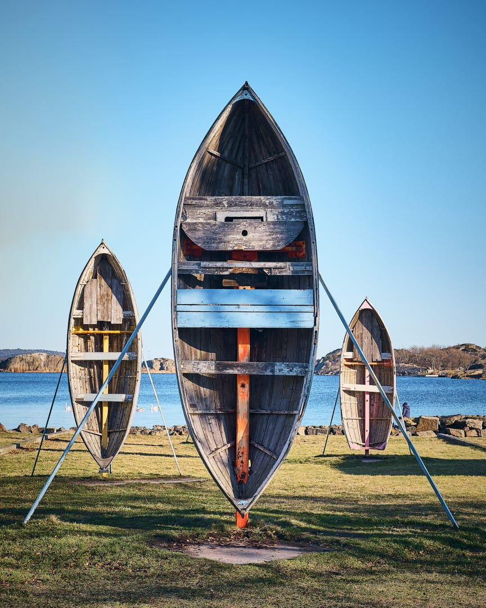
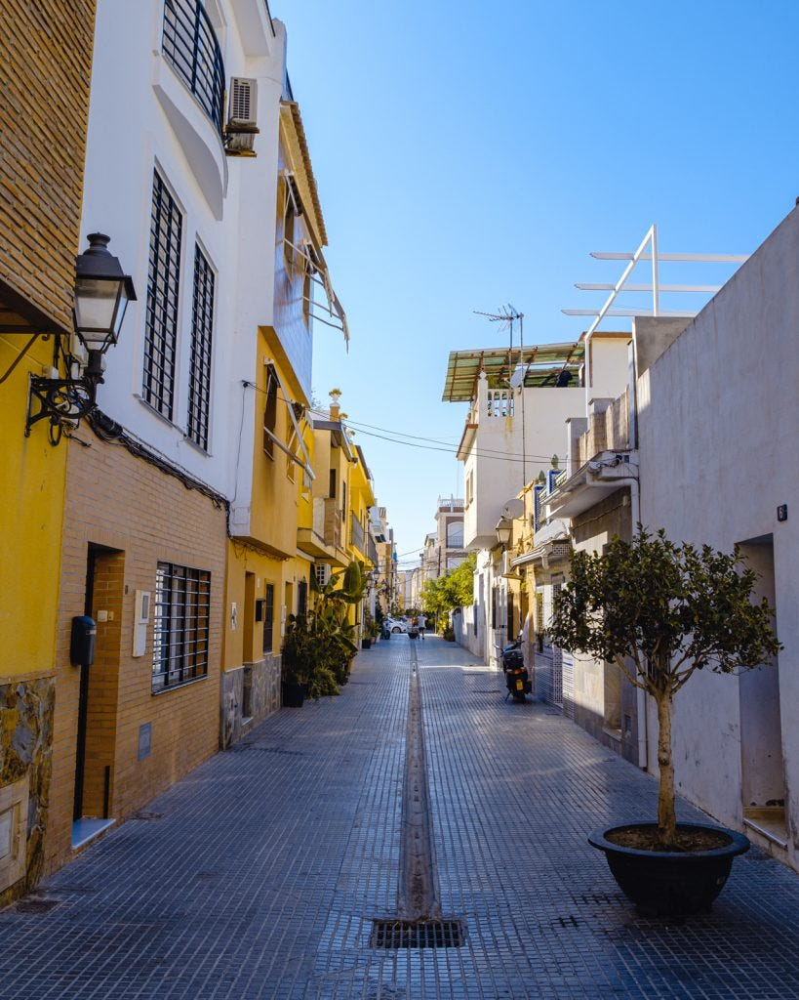
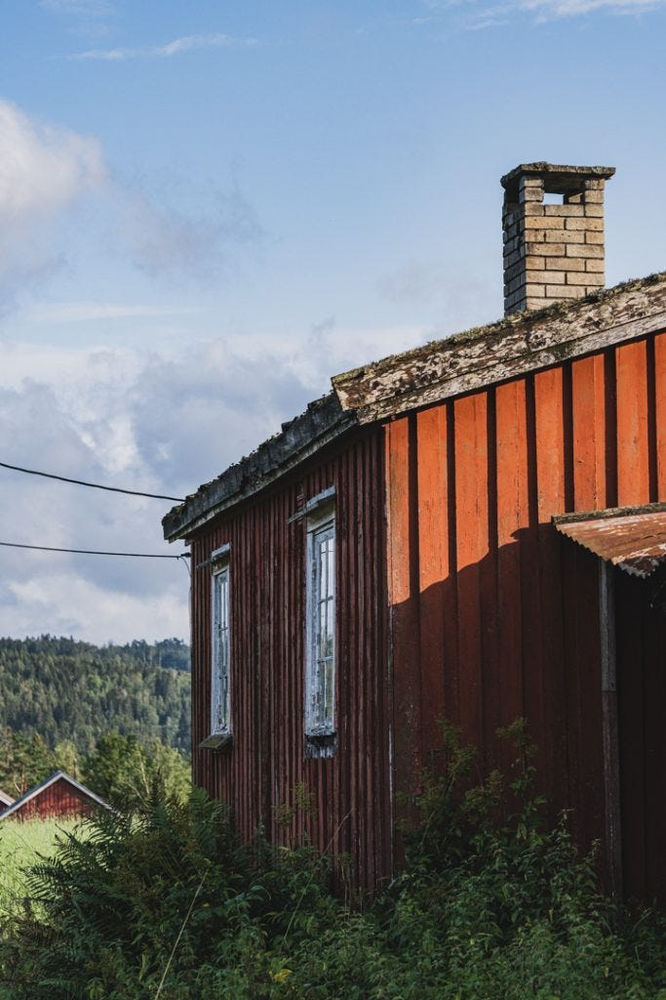
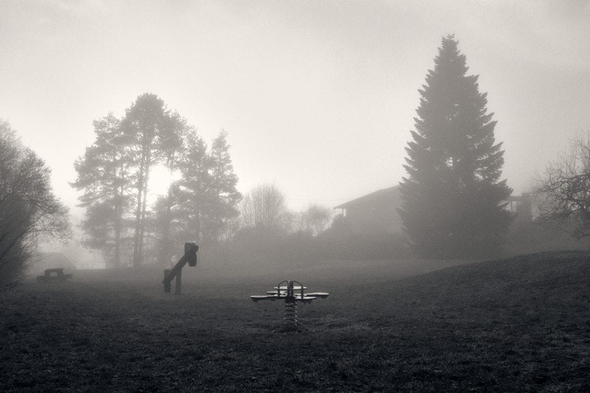
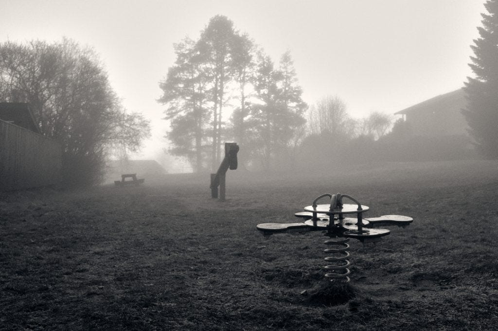
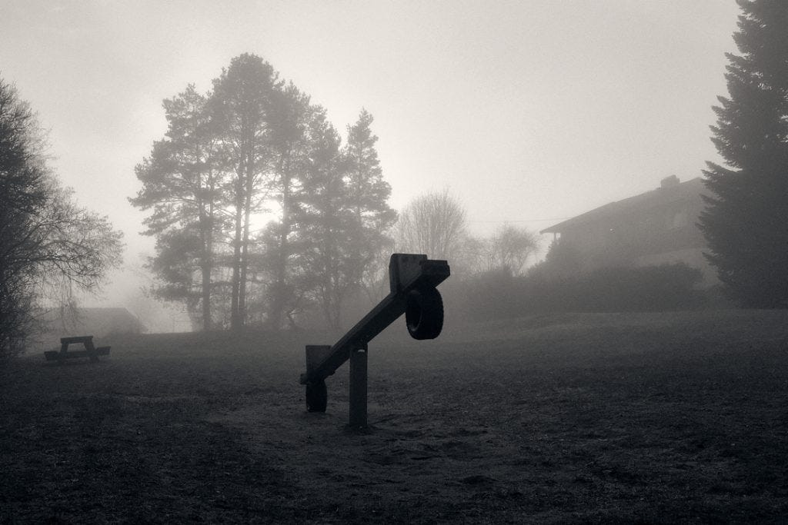
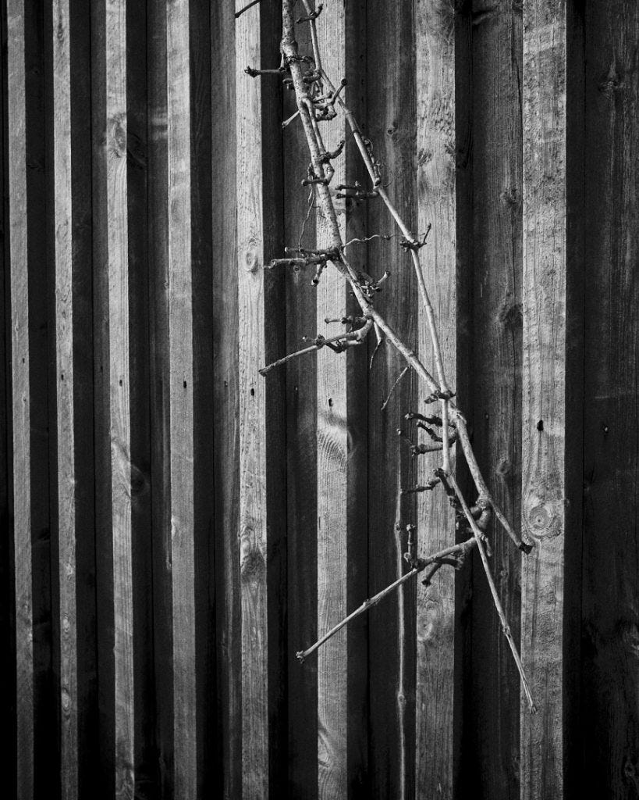
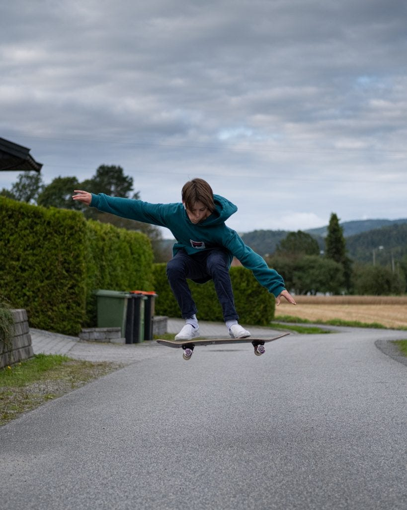

One of the things that some Fuji shooters love is the Fuji film simulations included in the Fuji cameras. Remember that Fuji was originally a company producing old school film for analog cameras, hence the name Fujifilm. Some of these film stocks are available as film simulations, such as Acros, [Classic Chrome](https://www.youtube.com/watch?v=XnhFKm63ZMQ), Velvia, Provia, Astia, Pro Neg, and recently Classic Neg. To get a better understanding of these simulations read [this article](https://www.jmpeltier.com/fujifilm-film-simulation-differences/).
But Fuji users have also gone to great lengths to simulate other film stocks, such as Kodachrome. They call these custom film simulations *recipes* and there are quite a lot of them, as you can see here at [FujiWeekly.com](https://fujixweekly.com/recipes/) and for a huge collection of recipes take a look at this [Google Sheet](https://docs.google.com/spreadsheets/d/1R7Zau2LIoy5vd5sPXrIGmtGbrSGlj_fPYPPG2rsWMFg/htmlview?fbclid=IwAR0OIBC8MAG8CyeZIU5-YOI_S_vaovETn5iUzTEKLFN__Glf6owWuUDyuxA#gid=0).
These recipes involve changing the base settings for a given film simulation for shadow, highlight, sharpness, saturation, white balance, grain effect etc. to better match another film stock.
Almost all cameras have picture profiles, like a standard profile for portraits, one for landscape, another for nature etc, but no other camera system has had this much focus on refining these profiles according to classic film stock. This makes Fuji as a company and their cameras unique.
**JPEG vs RAW**
These recipes only apply to JPEGs, not the RAW file. BUT — lately editing software has been able to figure out what profile has been used and apply this to the RAW file as well, although this is not the exact same as the one used in the camera itself. When I use a special film simulation Capture One will automatically try to match that to my RAW file when editing that photo, which gives you a good starting point for your post-processing making the photo closer to what you saw through the electronic viewfinder when you took the photo.
Another thing is that having good quality JPEGs coming straight out of the camera can cut down significantly on the time used on post-processing, giving you more time to get out and take pictures. These recipes can make it possible to still have a constant look and feel with your personal style applied. Perhaps too many of us spend too much time in front of the computer instead of taking actual photos so by relying on the camera to produce JPEGs you can be more out and about, spend more time in the moment when you take the photos as well, — just be you and your camera.
With all that said — I still always take RAW, often RAW + JPEGs in best available quality, but never just JPEGs.
**Ode to the old days of film**

I bought my first camera in the early 1990s, a Pentax Z20. For a while I took a lot of slides often using film stocks like Velvia and later black and white stocks like Ilford. What I look for in my photos are highly inspired by those experiences and I much prefer the film look than the clinically clean, hyper sharp photos made possible by modern cameras.

Especially taking photos in black and white have been a game changer for me, using custom film recipes.
**Using film recipes for inspiration**
As noted above, mirrorless cameras give you the possibility to see your photo in the electronic viewfinder or on the back display. And this is probably the main reason I love Fuji film recipes.
For instance, the following pictures were taken on an extremely foggy day and the colors were all muted and dull. I weren’t actually very interested in taking photos that day, but I brought my X100f and went for a walk.
I happened to have a Acros film simulation selected and as I looked through the viewfinder my dull surroundings suddenly became very moody. The inspiration was instant and all my attention was turned to the viewfinder.



I’m not saying these photos are mindblowing or award-worthy in any way, but in this instance, and many others, using a film simulation has given me the inspirational jolt I needed to take some photographs.
**Film Simulation Bracketing**
Another feature of the Fuji cameras related to film simulation is to use Film Simulation Bracketing, making it possible to choose three film simulations, and each time you take a photo three separate JPEGs are stored on your memory card, each with a different film simulation. This can be inspirational even if you process the RAW file, just using the three different looks as starting points. In my case, when I use this feature, which isn’t that often, I choose three simulations that are pretty different, like Velvia, Classic Chrome, and Across, for a saturated, a cool and a black and white look, — or Velvia, Astia and Classic Chrome which gives me the vibrant, standard and muted look, all in one click of the shutter. Of course, this not suitable for most cases, but again, it can surprise you how much the different film stocks affect the look and feel of the image.
For more details on this, take a look at the video below.
[https://www.youtube.com/watch?v=kaTvF56uoLY&feature=youtu.be](https://www.youtube.com/watch?v=kaTvF56uoLY&feature=youtu.be)
**Conclusion**
I’m constantly changing my recipes and haven’t found the look I want, but just reading about different recipes and what the photographer wants to achieve & seeing photos taken with them is inspiring to me. Until someone can sell inspiration for photographers in a bottle or in pill form, this is the closest I’ve come. Try it out.


**Further reading**